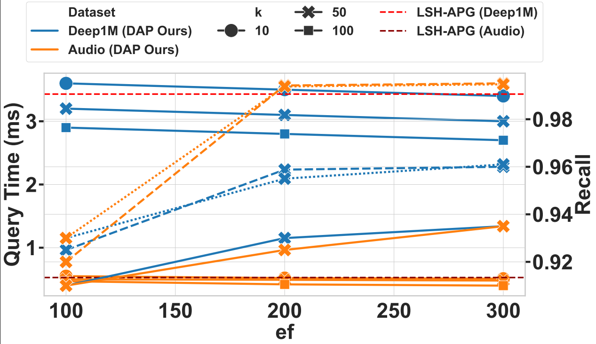
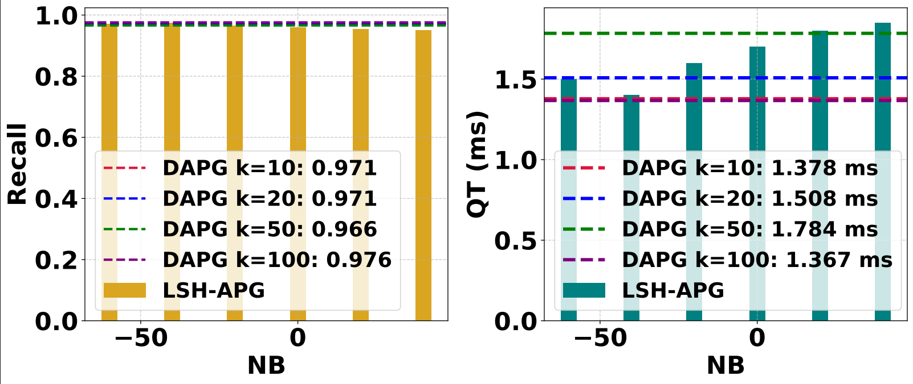
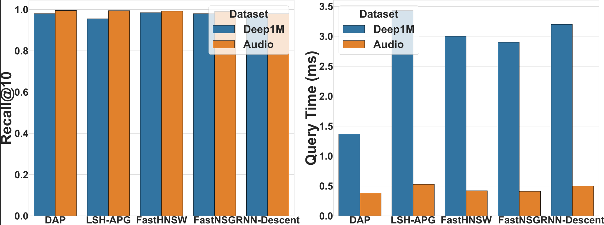

DAPG: Distance-Aware Pruned Graph
Efficient Approximate Nearest Neighbor Search over Evolving Data
University of Washington
View Code Project PageWhy This Work

| Common gaps in existing ANN methods | How DAPG addresses them |
|---|---|
| Fixed-degree graphs: Static degree limits prevent density-aware sparsification. | Adaptive sparsity: Local percentile filtering and global capping balance recall and cost. |
| Costly rebuilds: Traditional structures often require expensive repair or reconstruction under updates. | Localized updates: Insertions and deletions reapply pruning only to affected neighborhoods. |
| Uncontrolled expansion: Greedy traversal may expand redundant nodes. | Pruned search: Traversal operates on a sparse, degree-controlled graph. |
| Weak theoretical support: Prior heuristics often lack formal sparsity, query-cost, and recall-preservation analysis. | Theory-backed design: DAPG provides sparsity bounds, query-cost analysis, and conditional recall-preservation guarantees. |
DAPG improves the recall-latency trade-off, achieving up to 3.3% higher recall and up to 2.9× lower query time, while supporting localized update maintenance.
Contributions
| Contribution | Description |
|---|---|
| 1. Distance-Aware Pruning | Introduces node-local percentile thresholds and adaptive global sparsification to build degree-adaptive proximity graphs. |
| 2. LSH-Seeded Graph Construction | Uses LSH-based candidate generation to construct a single-layer proximity graph with density-aware edge retention. |
| 3. Localized Update Maintenance | Supports insert/delete updates by reapplying pruning only to affected hash buckets, candidate neighborhoods, and adjacency lists. |
| 4. Theory and Evaluation | Provides sparsity, construction-cost, query-cost, update-cost, and conditional recall-preservation analysis, with experiments on six datasets. |
What DAPG Adds
- Distance-aware local pruning using node-specific percentile thresholds.
- Adaptive global sparsification to control high-degree nodes.
- LSH-seeded single-layer graph construction.
- Localized insert/delete maintenance without full-index reconstruction.
- Conditional recall-preservation analysis under candidate coverage and connectivity assumptions.
Cost Model
C_Q = O(d̄_DAPG · β(ℓ))
T_Q = O(d · d̄_DAPG · β(ℓ))
d̄_DAPG ≤ min{p d̄_LSH, T′}The expected query cost factorizes into the final average graph degree and the expected expansion depth needed to reach the query locality basin.
Compilation
Linux
Requires C++11 and OpenMP.
cd ./cppCode/DAPG
makeWindows
Use Visual Studio 2019+ and import the project located in:
./cppCode/DAPG/src/Enable OpenMP and C++11 support in the build settings.
Running DAPG
Command Format
./dapg datasetNameExample
cd ./cppCode/DAPG
./dapg siftThis runs DAPG index construction and ANN search on the SIFT dataset.
Supported Datasets
Convert datasets into the .data_new format for compatibility.
Dataset Format
{int: float size in bytes}
{int: number of vectors}
{int: dimension}
{float[]: all vector values, stored sequentially}Place converted datasets in:
./dataset/System Setup
Local Workstation
- Processor: 13th Gen Intel Core i9-13900HX
- Cores: 24 cores, 32 threads
- OS: Ubuntu 20.04 LTS
- Precision: float32
- Implementation: C++ with OpenMP
Microsoft Azure Virtual Machines
- Standard F32s v2: 32 vCPUs, 64 GiB RAM
- Standard E64-32s v3: 32 vCPUs, 432 GiB RAM, 1 TB SSD
Evaluation Results
| Dataset | Recall@10 | Query Time | Improvement vs. LSH-APG |
|---|---|---|---|
| DEEP1M | 0.9632 vs 0.9590 | 2.30 ms vs 3.43 ms | +0.44% recall / 32.9% faster |
| MNIST | 0.9984 vs 0.9972 | 0.56 ms vs 0.68 ms | +0.12% recall / 17.9% faster |
| SIFT1M | 0.9870 vs 0.9580 | 0.83 ms vs 2.42 ms | +3.34% recall / 2.9× faster |
DAPG achieves higher recall and lower latency on every evaluated dataset.
DAPG vs. LSH-APG
| Aspect | LSH-APG | DAPG | Outcome |
|---|---|---|---|
| Graph Structure | Single-layer LSH-assisted graph | Single-layer distance-aware pruned graph | Same lightweight indexing style with density-aware pruning |
| Degree Control | Fixed/global degree control | Local percentile pruning with adaptive global cap | Better sparsity control across dense and sparse regions |
| Pruning Rule | Global/static pruning conditions | Node-local distance-aware thresholds | Reduces redundant edges while preserving neighborhood connectivity |
| Update Maintenance | Incremental maintenance with global pruning behavior | Localized insert/delete maintenance on affected neighborhoods | Lower update overhead without full-index reconstruction |
| Analysis | LSH-seeded graph construction analysis | Sparsity, query-cost, update-cost, and conditional recall analysis | Stronger explanation of pruning and update behavior |
Figures
|
Figure 1 Query Time and Recall vs EF  View PDF |
Figure 2 DAPG vs. LSH-APG  View PDF |
Figure 3 DAPG vs. Baselines  View PDF |
Dynamic Workloads
DAPG is evaluated under two main update workloads: FIFO sliding window and random delete-and-new-insert.
1. FIFO Sliding Window
UPDATE=fifo
This workload follows a streaming-style evaluation. The index starts with the first 900K active vectors. At each update round, the workload:
- Deletes the oldest block of
δinvectors. - Inserts the next unseen block of
δinvectors. - Maintains a fixed-size active window.
This simulates a sliding-window setting where the indexed dataset gradually moves forward through the stream.
In the FIFO sliding-window workload, each round removes the oldest block of vectors and inserts the next unseen block, maintaining a fixed-size active window.
Additional Diagnostic Workload
UPDATE=random_reinsert
This workload deletes random active vectors and reinserts the same vectors. Because the same vectors are reinserted, the data geometry does not substantially change. Therefore, it is used only as an additional diagnostic workload, not as the main dynamic setting.
2. Random Delete-and-New-Insert
UPDATE=random_new
This is the main stress-test workload. The index starts with an active set of 900K vectors. At each update round, the workload:
- Deletes
δinrandomly selected active vectors. - Inserts
δinpreviously unseen vectors. - Keeps the active set size fixed at 900K.
This workload is challenging because the data geometry changes over time. Random deletions may remove important navigational links, while new insertions introduce previously unseen neighborhoods.
In the random delete-and-new-insert workload, each round deletesδinrandomly selected active vectors and insertsδinpreviously unseen vectors, keeping the active set size fixed.
Contact
For questions or contributions, please open an issue or contact the authors listed in the paper.